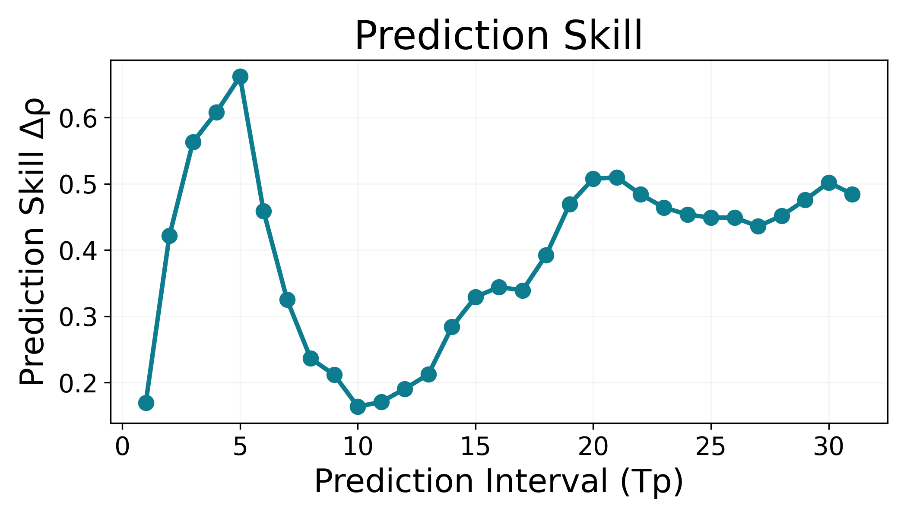
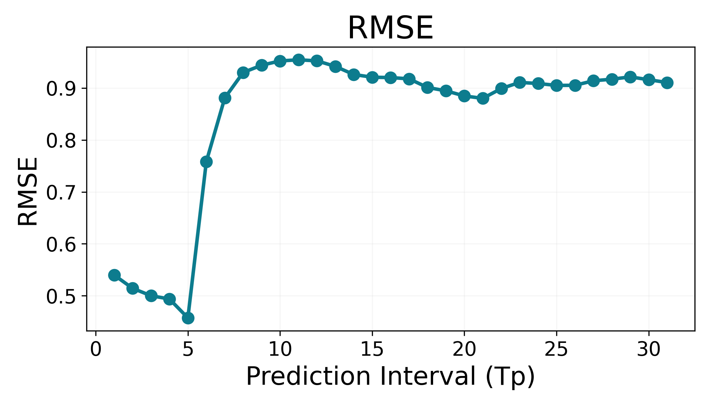

Predicting Algal Blooms with High Resolution Imaging and Machine Learning
Motivation
Southern California’s coastline experiences recurring Harmful Algal Blooms (HABs) driven by the dinoflagellate Lingulodinium polyedra (L. poly). During bloom events, dense concentrations of this bioluminescent organism turn the surf a deep rust-red by day and emit an electric-blue glow at night as waves disturb the water. While visually striking, these blooms signal a serious ecological imbalance: they can deplete dissolved oxygen, disrupt marine food webs, and trigger closures of shellfish harvesting and recreational beaches along one of the country’s most visited coastlines.
.gif)
Image by Tim Fallon, via Wikimedia Commons. Licensed under CC BY 4.0.
HABs are becoming more frequent and more intense as anthropogenic climate change alters the ocean conditions that regulate phytoplankton growth. Warmer sea surface temperatures expand the seasonal window in which L. polyedra thrives. Changes in coastal upwelling and agricultural runoff increase nutrient availability, fueling rapid population growth. At the same time, ocean acidification and shifting ocean chemistry may alter phytoplankton community dynamics in ways that favor bloom-forming species.
Despite the growing risks, bloom monitoring still relies heavily on labor-intensive manual water sampling, which provides sparse and delayed observations. Continuous environmental sensors deployed at research piers offer a promising alternative: they record temperature, pH, salinity, dissolved oxygen, and chlorophyll continuously in near real time.
Our project explores whether this stream of environmental sensor data—combined with automated plankton imaging and nonlinear predictive modeling—contains enough signal to estimate L. polyedra bloom dynamics before they become visible at the surface. If successful, this approach could help support earlier warnings for coastal managers, fisheries operators, and the public.
Results
We evaluated several modeling approaches to estimate and forecast L. polyedra bloom dynamics from IFCB image features and environmental data. We tried three approaches, baseline regression models, univariate forecasting, and multiview embedding.
1) Baseline Models
Using IFCB image features alone, the Random Forest model produced the strongest baseline performance with R² = 0.523 and RMSE = 7.990. Linear Regression and Ridge Regression achieved lower scores (R² = 0.245 and 0.349 respectively), indicating that the relationship between cell morphology and bloom concentration is strongly nonlinear.
2) Univariate Forecasting
When forecasting from the bloom history alone using simplex projection, the strongest effective skill occurred at Tp = 3 days with ρeff = 0.388. Skill declined at intermediate horizons before showing a modest recovery around 20–30 days, suggesting weak longer-period structure in bloom dynamics.
3) Multiview Embedding
Multiview Embedding produced the strongest forecasting performance across nearly all horizons. At Tp = 3 days, the combined model reached ρeff = 0.581 with RMSE = 0.387. Forecast skill then declined at intermediate horizons before rising again near Tp = 29 days, where the combined model achieved ρeff = 0.452.

This two-peak structure suggests two characteristic timescales in bloom dynamics: a short-term window related to bloom growth (≈3 days) and a longer periodic signal around one month that may reflect tidal or coastal circulation cycles.

Model Comparison
| Random Forest | Simplex | MVE (Combined) | |
|---|---|---|---|
| Approach | Supervised | EDM (univariate) | EDM (multivariate) |
| Temporal structure | No (random split) | Yes | Yes |
| Features used | Image features | Target only | Image + Env. |
| Best metric | R² = 0.523 | ρeff = 0.388 | ρeff = 0.581 |
| Best horizon | N/A (static) | Tp = 3 | Tp = 3 |
| Multi step forecast | No | Yes (Tp = 1 to 30) | Yes (Tp = 1 to 31) |
Methodology
We combined daily environmental sensor measurements from Scripps Pier with automated plankton observations collected by the Imaging FlowCytobot (IFCB). After aligning the datasets by date and cleaning missing values, we produced a single daily record describing both ocean conditions and L. polyedra bloom activity.
To understand how well bloom dynamics could be predicted, we evaluated several modeling approaches with increasing complexity.
Forecast skill was evaluated across prediction horizons from 1 to 31 days. For nonlinear models we also computed effective skill (ρeff), which subtracts the contribution of simple persistence in the time series to isolate genuine predictive signal.
Conclusion & Discussion
Our results suggest that L. polyedra bloom dynamics can be predicted at two distinct timescales. The strongest forecasts occurred about three days ahead, where multiview embedding achieved an effective correlation of ρeff = 0.581. This short horizon likely reflects the rapid growth phase of bloom formation, during which the current plankton community and environmental conditions remain highly informative.
Forecast skill dropped at intermediate horizons (4–13 days), indicating that bloom development becomes harder to anticipate at weekly timescales. During this period the system likely responds to unpredictable environmental disturbances such as wind-driven mixing or changes in coastal circulation.
A second peak in predictive skill emerged near 29 days, suggesting a quasi-monthly cycle in bloom dynamics. This timescale is consistent with lunar tidal cycles and coastal upwelling processes that influence water mixing and nutrient availability near Scripps Pier.
Environmental variables such as water pressure, temperature, and salinity were consistently strong predictors of bloom behavior. Among image-derived features, the abundance of Prorocentrum micans was especially informative, suggesting that related dinoflagellate species may respond to similar environmental conditions.
Despite promising results, this study is limited by its focus on a single monitoring location. Future work should expand the analysis to additional coastal sites and incorporate real-time sensor streams to support operational bloom forecasting. Integrating predictive models with interactive visualization tools could ultimately provide coastal managers and the public with early warnings of harmful algal bloom events.